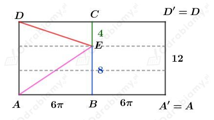
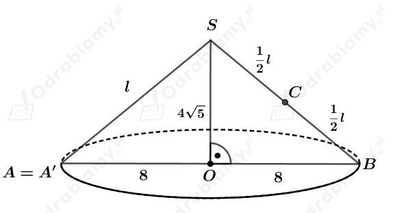
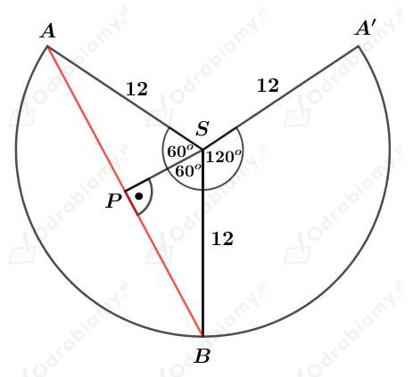
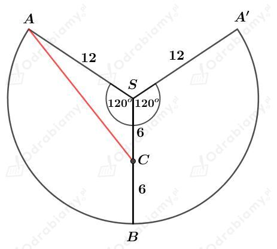

Dany jest walec, którego przekrój osiowy jest kwadratem o boku długości 12.
Promień koła będącego podstawą tego walca ma długość 6. Wyznaczmy obwód tego koła. Mamy:
Walec rozwijamy i otrzymujemy prostokąt przedstawiony na rysunku:

a)
Korzystając z twierdzenia Pitagorasa dla trójkąta ABE mamy:
b)
Korzystając z twierdzenia Pitagorasa dla trójkąta DEC mamy:
Rysunek:

Korzystając z twierdzenia Pitagorasa dla trójkąta OBS mamy:
Wyznaczmy obwód koła będącego podstawą tego stożka. Mamy:
Obwód ten jest równy długości łuku wycinka koła o promieniu l=12 i kącie środkowym 𝛼. Mamy więc:
a)
Rysunek:

Korzystając ze związku między długościami boków w trójkącie PBS o kątach 30o, 60o, 90o mamy:
oraz
a stąd mamy:
b)
Rysunek:

Korzystając z twierdzenia cosinusów dla trójkąta ACS mamy: